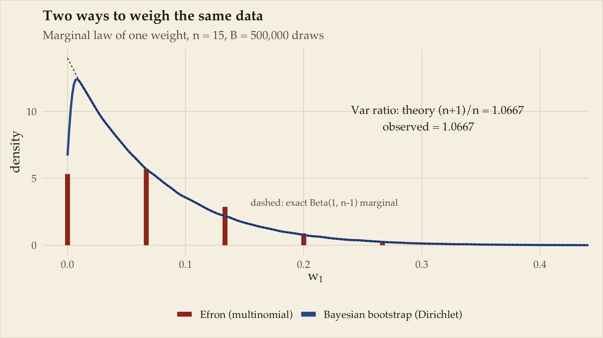
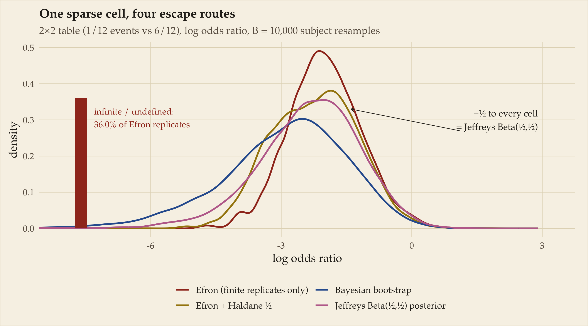
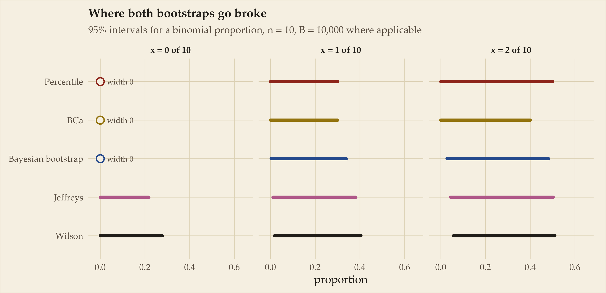
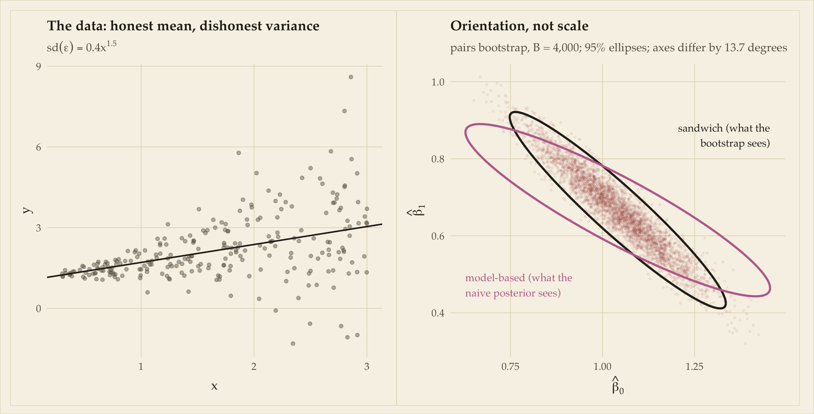
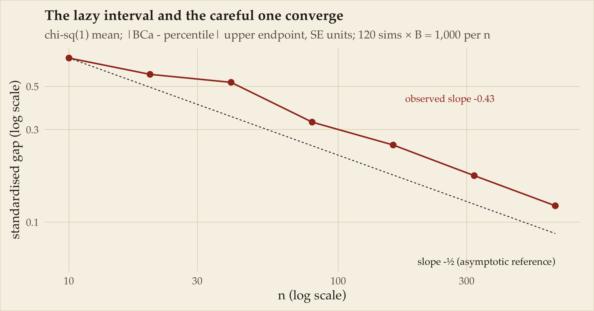

The bootstrap moves the data; Bayes moves the parameters. How far does that analogy actually hold?
Rubin’s Dirichlet weights, Efron’s multinomial counts, fifteen law schools, and the exact point at which resampling stops being inference on the cheap.
Statistics
Bootstrap
Bayes
R
Author
Ravi Kalia
Published
July 24, 2026
Where this came from
Somewhere in the middle of my PhD, in conversation, Brian Ripley described the bootstrap to me as the poor person’s Bayesian approach — and then gave me the sharper version of the same idea, the one this post is built on: the bootstrap moves the data, while Bayes moves the parameters. I am working from memory of a conversation, so what follows is recollection and paraphrase, not transcript. The framing stuck with me, and this post is my attempt to work out what it actually buys you and where it stops being true. The elaborations below — the algebra, the failure modes, the worked examples, and any errors — are mine, not his.
The data-versus-parameters framing is not unique to that conversation; it recurs throughout the confidence-distribution literature. Fraser’s “Is Bayes Posterior just Quick and Dirty Confidence?” (Statistical Science, 2011) is essentially a paper-length treatment of the same question, run in the opposite direction.
Figure 1: Theodor Hosemann (1807–1875), Münchhausen pulls himself out of the swamp by his own pigtail. Book illustration, before 1875. Public domain, via Wikimedia Commons. Chosen because it is the German telling — hair, not bootstraps — which, as we are about to see, is the philologically correct version of the joke.
A baron, a swamp, and two ways out
The self-rescue story belongs to Baron Münchhausen — Hieronymus Carl Friedrich von Münchhausen (1720–1797), a real Hanoverian cavalry officer whose after-dinner tall tales were written up, wildly embellished, in English by Rudolf Erich Raspe in 1785, then translated back into German and expanded by Gottfried August Bürger in 1786. His countrymen called him der Lügenbaron, the Baron of Lies, which he reportedly did not enjoy.
Here is the philological tangle, and it is genuinely funny. In the German telling the Baron pulls himself out of the swamp by his own hair — sich am eigenen Schopf aus dem Sumpf ziehen — in some versions by his pigtail, horse clamped between his knees. The bootstraps are a different artifact entirely: a nineteenth-century American idiom, and originally a sarcastic one. “To pull yourself up by your own bootstraps” named something manifestly impossible; only later did it flip polarity and become earnest self-help rhetoric. The two images fused in English, and when Efron needed a name in 1979 for resampling your own data to learn about your own estimator, he inherited the fused version. So the method is named after the physically impossible American misremembering of a German story about hair.
A note on von Mises, von Mises, von Mises, and von Münchhausen. I first called the Baron “von Mises,” and he is not. Richard von Mises is the frequency-probability one, Ludwig von Mises is the Austrian economist, and the von Mises distribution is the circular one. None of them ever levitated out of a swamp by his own hair.
And the statistical irony underneath the name: the bootstrap looks like self-rescue but is not magic. It works because \(\hat F\) is a consistent estimate of \(F\) — you are not really lifting yourself, you are lifting yourself with a rope that happens, asymptotically, to be tied to something. The swamp is escapable exactly when \(\hat F \to F\) fast enough for your functional. Later in the post (the Uniform maximum) we will watch the swamp win.
The epigram, with both edges sharpened
The bootstrap gets called the poor person’s Bayes for a specific reason: it hands you a distribution, not a standard error. You resample, you get ten thousand values of \(\hat\theta^*\), you draw the histogram — and everyone in the room promptly reads the percentile interval as a credible interval. They read it that way because it looks exactly like one.
The joke cuts both ways, and both readings are largely right:
The Bayesian’s edge:“You’re doing my inference badly, with a prior you never chose.” The bootstrap distribution is (we will make this precise) an approximate posterior under a particular, rather strange, automatic prior. If you wanted that prior, fine — but you never looked at it.
The pragmatist’s edge:“I got 90% of your answer for 1% of the effort.” No likelihood, no prior elicitation, no MCMC diagnostics, no convergence folklore. One for loop.
The rest of this post is an audit of both claims: what exactly the poor person bought, at what discount, and which line items were quietly left off the receipt.
Rubin’s mischief: the Bayesian bootstrap
In 1981 Donald Rubin published a short paper with a deadpan title, “The Bayesian Bootstrap,” whose stated purpose was less to propose a method than to make a point about one. Efron’s bootstrap draws \(n\) observations with replacement, which is the same thing as reweighting the data with multinomial counts: observation \(i\) gets weight \(w_i = n_i/n\) where \((n_1,\dots,n_n) \sim \text{Multinomial}(n; \tfrac1n,\dots,\tfrac1n)\). Rubin’s version replaces the multinomial with a flat Dirichlet: \((w_1,\dots,w_n) \sim \text{Dirichlet}(1,\dots,1)\) — equivalently, normalised standard exponentials. Everything else is identical: compute your statistic under the weights, repeat \(B\) times, look at the distribution.
The two weighting schemes are first-order the same. Both have \(E[w_i] = 1/n\), and the variances differ by exactly one factor:
But the Dirichlet version is not merely a smoothed imitation: it is a genuine posterior. Put a Dirichlet-process prior on \(F\) and let the concentration go to zero with no base measure, and the posterior for \(F\) given the data is exactly “Dirichlet\((1,\dots,1)\) weights on the observed points.” The Bayesian bootstrap is the \(\alpha \to 0\) limit of orthodox nonparametric Bayes. Two bridges connect the camps from either side: Efron (2012) showed that parametric-bootstrap replications approximate a Jeffreys-type posterior and can be importance-reweighted to make the correspondence exact; Newton and Raftery (1994) arrived from the parametric side with the weighted likelihood bootstrap, using random weights on the log-likelihood terms as approximate posterior sampling.
Rubin, characteristically, was blunt about the uncomfortable part: this posterior puts zero mass on any value you did not observe. Under it, \(P(X > \max(x)\,|\,\text{data}) = 0\), exactly. No smoothing, no extrapolation, no tail. Whether that is a feature (honesty) or a bug (absurdity) is, he noted, a question about the model both bootstraps share — and it will be the recurring villain of this post.
Setup: packages, palette, theme, weighted helpers
library(ggplot2)library(dplyr)library(patchwork)library(boot) # boot(), boot.ci(), airconditlibrary(bootstrap) # law, law82# Ink-and-paper palette (validated for CVD separation and contrast):# Efron bootstrap = madder red, Bayesian bootstrap = Prussian blue,# parametric Bayes = plum, frequentist corrections = old gold.pal <-c(efron ="#A03522", bb ="#2F5E9E", bayes ="#BE6E9A", corr ="#A5850E")ink <-"#2B2620"; ink2 <-"#6B5F52"paper <-"#F7F2E7"; rule <-"#E2D8C0"theme_inkpaper <-function(base_size =12.5) {theme_minimal(base_size = base_size, base_family ="Palatino") +theme(text =element_text(colour = ink),plot.background =element_rect(fill = paper, colour = rule, size =0.4),panel.background =element_rect(fill = paper, colour =NA),panel.grid.major =element_line(colour = rule, size =0.3),panel.grid.minor =element_blank(),axis.text =element_text(colour = ink2),axis.title =element_text(colour = ink),plot.title =element_text(face ="bold", size =rel(1.1)),plot.subtitle =element_text(colour = ink2, size =rel(0.9)),plot.caption =element_text(colour = ink2, size =rel(0.75), hjust =0),legend.position ="bottom",legend.title =element_blank(),strip.text =element_text(colour = ink, face ="bold"),plot.margin =margin(10, 14, 8, 10) )}theme_set(theme_inkpaper())# --- Weighted helpers (the Bayesian bootstrap needs these; base R lacks them) ---# B x n matrix of flat-Dirichlet weight vectors, one per rowrdirichlet1 <-function(B, n) { m <-matrix(rexp(B * n), B, n) m /rowSums(m)}# Weighted quantile by CDF inversion (~5 lines; Hmisc::wtd.quantile not needed)wtd_quantile <-function(x, w, probs) { o <-order(x); x <- x[o]; w <- w[o] /sum(w) cw <-cumsum(w)vapply(probs, function(p) x[match(TRUE, cw >= p)], numeric(1))}# Weighted correlation for a whole matrix of weight rows at once.# Population-form (no Bessel correction): the BB treats correlation as a# functional of the weighted empirical measure, so no n/(n-1) factor belongs.bb_cor_mat <-function(x, y, W) { mx <- W %*% x; my <- W %*% y vx <- W %*% (x * x) - mx^2 vy <- W %*% (y * y) - my^2 cxy <- W %*% (x * y) - mx * myas.vector(cxy /sqrt(vx * vy))}fmt <-function(x, d =3) formatC(x, digits = d, format ="f")# big.mark without format()'s habit of flipping to scientific notation at 1e5bm <-function(x) formatC(x, format ="d", big.mark =",")
Here are the two weight distributions side by side, with the variance ratio from Equation 1 checked numerically rather than asserted.
Code
set.seed(1785) # Raspe publishes the Baron's adventuresn <-15B <-500000# large: we are checking a ratio of variances, which converges slowlyw_efron <-rmultinom(B, n, rep(1/n, n))[1, ] / n # first coordinate, B drawsw_bb <-rdirichlet1(B, n)[, 1]v_e <-var(w_efron); v_b <-var(w_bb)ratio_emp <- v_e / v_bratio_theory <- (n +1) / nspikes <-as.data.frame(table(w = w_efron), stringsAsFactors =FALSE)spikes$w <-as.numeric(spikes$w)# Convert spike mass to density height (lattice spacing 1/n) so heights comparespikes$dens <- (spikes$Freq / B) / (1/ n)ggplot() +geom_segment(data = spikes,aes(x = w, xend = w, y =0, yend = dens, colour ="Efron (multinomial)"),size =2.2, lineend ="butt") +geom_line(data =data.frame(w =density(w_bb, from =0)$x,d =density(w_bb, from =0)$y),aes(w, d, colour ="Bayesian bootstrap (Dirichlet)"), size =1) +stat_function(fun =function(t) dbeta(t, 1, n -1), colour = ink,linetype ="22", size =0.4) +annotate("text", x =0.24, y =9.5, hjust =0, family ="Palatino", colour = ink,label =sprintf("Var ratio: theory (n+1)/n = %s\n observed = %s",fmt(ratio_theory, 4), fmt(ratio_emp, 4))) +annotate("text", x =0.155, y =3.2, hjust =0, family ="Palatino",colour = ink2, size =3.2, label ="dashed: exact Beta(1, n-1) marginal") +scale_colour_manual(values =c("Efron (multinomial)"=unname(pal["efron"]),"Bayesian bootstrap (Dirichlet)"=unname(pal["bb"]))) +coord_cartesian(xlim =c(0, 0.42)) +labs(title ="Two ways to weigh the same data",subtitle =sprintf("Marginal law of one weight, n = %d, B = %s draws", n, bm(B)),x =expression(w[1]), y ="density")

Figure 2: The marginal distribution of a single observation’s weight under the two bootstraps, n = 15. Efron’s multinomial weights live on the lattice {0, 1/15, 2/15, …}; Rubin’s Dirichlet weights are continuous with a Beta(1, 14) marginal. Same mean, variances in the exact ratio (n+1)/n.
The observed variance ratio, 1.0667, recovers the theoretical \((n+1)/n = 1.0667\) to within Monte Carlo error (a ratio of variances is a slow-converging thing to simulate, hence the large \(B\)). At \(n = 15\) the two schemes differ by under seven percent in weight variance; by \(n = 100\) it is one percent. First-order, they are the same procedure.
The spine: move the data, or move the parameters
The bootstrap moves the data. Bayes moves the parameters.
This is the organising idea, and every section from here on returns to it. The bootstrap holds the fitted model still and perturbs the empirical measure — new datasets, one estimate each. Bayes holds the one dataset still and perturbs \(\theta\) — one dataset, a distribution of parameters. That these opposite motions can describe the same uncertainty is the analogy; the conditions under which they actually do is the audit.
The bridge is a pair of linearisations. Write \(\ell(\theta)\) for the log-likelihood (or, for M-estimation, the objective), and define the two information matrices
\[
J = -E\!\left[\partial^2_\theta\, \ell(\theta)\right]
\qquad\text{(curvature: how sharply the objective bends)},
\]
\[
I = E\!\left[\partial_\theta\, \ell(\theta)\, \partial_\theta\, \ell(\theta)^{\!\top}\right]
\qquad\text{(score noise: how much the gradient jitters)}.
\]
Both paradigms are, to first order, Gaussian around \(\hat\theta\) — but with different covariances:
\[
\sqrt{n}\,(\hat\theta^* - \hat\theta) \,\big|\, X \;\rightsquigarrow\; N\!\left(0,\; J^{-1} I J^{-1}\right)
\qquad \text{(bootstrap: delta method / influence functions)},
\tag{2}\]
Unpacking the sandwich \(J^{-1} I J^{-1}\) once, properly: the outer \(J^{-1}\)’s translate gradient noise into parameter movement (a flat objective amplifies noise, a sharp one damps it), and the middle \(I\)is the gradient noise. The bootstrap estimates this whole composite, because perturbing the data directly shakes the score and watches the estimator respond. The posterior in Equation 3 sees only the curvature \(J\), because with the data held fixed, curvature is all the likelihood surface has to offer.
The hinge of the whole post
Equation 2 and Equation 3 coincide iff \(I = J\) — the information equality, which holds exactly when the model is correctly specified (it is the second Bartlett identity). One line, two consequences: model misspecification breaks the agreement at first order, \(O(1)\), no asymptotic rescue; and everything else that can go wrong hides in the higher-order terms the linearisations discard. The entire audit below is a tour of those two failure channels.
Fifteen law schools
Every bootstrap paper since 1979 is contractually obliged to include the law-school data, and this post is no exception — but we will use it properly, truth check included. bootstrap::law records average LSAT and GPA for \(n = 15\) American law schools; the correlation \(\hat\rho\) is the target. The dataset earns its keep three times over: \(\rho\) is bounded above by 1, so its resampling distribution is visibly skewed and the percentile-versus-BCa disagreement is obvious without squinting; bootstrap::law82 contains the full population of 82 schools, so we can compute the true \(\rho\) and check who was right; and correlation has a clean parametric-Bayes counterpart through Fisher’s \(z\), so all four intervals go on one set of axes.
Figure 3: Left: the fifteen law schools. Right: three approximate posteriors/resampling distributions for ρ and four interval constructions. The percentile interval ignores the skew it is drawn on top of; BCa corrects it; the Bayesian bootstrap and the Fisher-z posterior agree with each other more than either agrees with the raw percentile.
The four intervals, numerically: percentile \([0.464, 0.961]\), BCa \([0.339, 0.942]\), Bayesian bootstrap \([0.487, 0.932]\), Fisher-\(z\) posterior \([0.439, 0.922]\). Note who disagrees with whom: the raw percentile endpoint sits highest on the left because \(\hat\rho\) is biased toward the boundary and the percentile method doubles the bias rather than correcting it. BCa and the Fisher-\(z\) posterior — the second-order frequentist correction and the matching-prior Bayes answer — nearly coincide, which is the univariate duality doing its work in the wild.
The truth check
law is a sample of 15 from a known population of 82, so unusually, we do not have to take anyone’s word for anything. The population correlation is computable, and by drawing many size-15 subsamples from the 82 schools we get the actual sampling distribution of \(\hat\rho\) — the thing every method above is trying to imitate — plus honest empirical coverage for each interval.
Figure 4: The actual sampling distribution of the correlation across 500 size-15 subsamples of the 82-school population (ink), against the single-sample distributions from the figure above. The vertical line is the population truth. The bootstrap distributions are centred on the sample, not the truth — that is by design; their job is spread and shape, not location.
Code
knitr::kable(covtab, digits =3)
Table 1: Empirical coverage of nominal 95% intervals over 500 size-15 subsamples of the 82-school population.
Method
Coverage
Mean length
Percentile
0.918
0.469
BCa
0.932
0.519
Bayesian bootstrap
0.868
0.382
Fisher-z posterior
0.934
0.497
The population truth is \(\rho_{82} = 0.760\) — so the original sample’s \(\hat\rho = 0.776\) was, for once, close. The coverage table is the part most posts skip, and it does not flatter everyone equally. All four run under the nominal 95% (small-sample correlation is hard, and no BCa fit failed), but the ordering is the interesting part. The two second-order-correct constructions land closest: BCa at 0.932 and the Fisher-\(z\) posterior at 0.934. The raw percentile interval manages 0.918. And the Bayesian bootstrap comes last, at 0.868, on the shortest average interval of the four.
That last number is worth sitting with, because it is this post’s thesis arriving two sections early. The Bayesian bootstrap fixes Efron’s discreteness, not his calibration. Its weights are smoother and — by exactly the \((n+1)/n\) of Equation 1 — its resampling distribution is slightly tighter than Efron’s, so its intervals are slightly shorter. But a percentile interval read off the Bayesian bootstrap is still an uncorrected percentile interval, and it under-covers for precisely the reason the raw percentile does: \(\hat\rho\)’s distribution is skewed toward the boundary and nobody corrected for it. Smoothness is not calibration. Nothing in the Dirichlet buys you the \(z_0\) and \(a\) that BCa computes, or the variance-stabilising transform that Fisher’s \(z\) applies.
Hold that thought, because near the end of the post it becomes the verdict: the percentile interval isn’t the bootstrap working — it’s the bootstrap being used lazily on a functional whose distribution isn’t symmetric.
Continuous versus discrete: where the artifacts live
The bootstrap moves the data — and the way it moves them is by duplication. That single mechanical fact plays out completely differently on continuous and on discrete data, the Bayesian bootstrap fixes a different thing in each case, and in each case a residue remains that neither fixes. The residue is exactly where the poor person starts paying.
Continuous data: ties and lattice
If \(F\) is continuous, a real sample of size \(n\) contains no duplicates, with probability one. An Efron resample always contains them: the expected number of distinct values is \(n\left(1 - (1 - 1/n)^n\right) \approx n(1 - e^{-1}) \approx 0.632\,n\). So every resample is a draw from a distribution with atoms — something the truth, by assumption, is not. For statistics that are smooth functions of means this washes out. For anything sensitive to distinctness or interpoint distance it is bias, not noise:
kernel bandwidth selectors, which see zero interpoint distances that cannot occur in continuous data;
nearest-neighbour methods, and cross-validation, where a duplicated point lands in both the training and the test fold — this leakage is precisely why Efron’s .632 estimator exists (Efron, 1983);
spacings- and entropy-based estimators, which meet \(\log 0\);
rank statistics, which suddenly need tie corrections the raw data never did;
anything touching the minimum, the maximum, or the empirical support.
There is also a quieter artifact: \(\hat\theta^*\) lives on a finite set. For small \(n\) the percentile-interval endpoints are visibly quantised — the interval can only end where the lattice permits — and the achievable coverage levels are granular. The effect is starkest for order statistics: a median of \(n\) points can only be one of a handful of values, so the resampled median’s support is tiny no matter how large \(B\) is. The Bayesian bootstrap’s weights are continuous, so the weighted statistic has a continuous distribution and smooth quantiles; and it keeps all \(n\) distinct values in every replicate, always — it perturbs \(F\) by reweighting rather than duplicating, which is the closer reading of “perturb the empirical measure.”
An honest caveat before the demo: the Bayesian bootstrap does not smooth the support. Extremes and support-boundary functionals fail under it exactly as they fail under Efron (we will watch this happen in Figure 9). Problems that need mass beyond the observed sample need the smoothed bootstrap or a Dirichlet process with a genuine base measure — that is, an actual prior.
Code
set.seed(632) # of coursens_frac <-c(2, 3, 5, 8, 12, 20, 35, 60, 120, 300, 1000)frac_sim <-vapply(ns_frac, function(n) {mean(replicate(400, length(unique(sample(n, n, TRUE))) / n))}, numeric(1))frac_df <-data.frame(n = ns_frac, sim = frac_sim,exact =1- (1-1/ns_frac)^ns_frac)p_frac <-ggplot(frac_df, aes(n)) +geom_hline(yintercept =1, colour = pal["bb"], size =0.9) +geom_hline(yintercept =1-exp(-1), colour = ink, linetype ="22", size =0.4) +geom_line(aes(y = exact), colour = pal["efron"], size =0.7) +geom_point(aes(y = sim), colour = pal["efron"], size =2) +annotate("text", x =900, y =0.975, hjust =1, family ="Palatino",colour = pal["bb"], size =3.4, label ="Bayesian bootstrap: all n, always") +annotate("text", x =900, y =0.605, hjust =1, family ="Palatino",colour = ink, size =3.4, label ="1 - 1/e") +scale_x_log10() +coord_cartesian(ylim =c(0.55, 1.03)) +labs(title ="Who survives resampling",subtitle ="Expected fraction of distinct values (400 sims per n)",x ="n (log scale)", y ="fraction distinct")x_air <- boot::aircondit$hours # 12 integer failure timesB <-30000means_e <-colMeans(matrix(x_air[sample(12, 12* B, TRUE)], 12))means_bb <-as.vector(rdirichlet1(B, 12) %*% x_air)# A narrow window: at 1/12 spacing, a wide one renders as a solid block and the# whole point (visible gaps between attainable values) is lost.win <-c(106, 108)tab_e <-as.data.frame(table(m = means_e), stringsAsFactors =FALSE)tab_e$m <-as.numeric(tab_e$m)tab_e <-subset(tab_e, m >= win[1] & m <= win[2])tab_e$dens <- (tab_e$Freq / B) / (1/12) # mass -> density (lattice spacing 1/12)# n = 4096: the default 512-point grid leaves only a handful of points inside a# window this narrow, and the curve would stop short of the panel edge.d_bb <-density(means_bb, adjust =0.9, n =4096)d_bb <-data.frame(m = d_bb$x, dens = d_bb$y)d_bb <-subset(d_bb, m >= win[1] & m <= win[2])p_lattice <-ggplot() +geom_segment(data = tab_e, aes(x = m, xend = m, y =0, yend = dens),colour = pal["efron"], size =0.9, lineend ="butt") +geom_line(data = d_bb, aes(m, dens), colour = pal["bb"], size =1.1) +annotate("text", x =mean(win), y =max(tab_e$dens) *1.08, hjust =0.5,family ="Palatino", colour = pal["efron"], size =3.4,label ="Efron: attainable values only, spaced 1/12 apart") +# label in the clear margin to the right of the plotted windowannotate("text", x = win[2] +0.06,y = d_bb$dens[which.min(abs(d_bb$m - win[2]))], hjust =0, vjust =0.5,family ="Palatino", colour = pal["bb"], size =3.4,label ="Bayesian\nbootstrap:\ncontinuous") +coord_cartesian(xlim =c(win[1], win[2] +0.75)) +labs(title ="The lattice of the mean, aircondit (n = 12)",subtitle =sprintf("B = %s; a %g-hour window of the resampling distribution",bm(B), diff(win)),x ="resampled mean failure time (hours)", y ="density")p_frac | p_lattice
Figure 5: Left: fraction of the sample that survives into an Efron resample — converging to 1 − 1/e ≈ 0.632 — while the Bayesian bootstrap keeps every observation in every replicate. Right: the resampling distribution of the mean of the aircondit failure times (n = 12, integer-valued), where every Efron replicate mean is a multiple of 1/12 (red comb) while the Bayesian bootstrap’s weighted mean is continuous (blue curve).
The aircondit failure times are integers, so every Efron resample mean is a multiple of \(1/12\) — the red comb above is not a rendering artifact, it is the actual support of the resampling distribution. Out of 30,000 Efron replicates there were only 2,375 distinct means; the 30,000 Bayesian-bootstrap replicates were, of course, all distinct. The same 0.632 governs both panels, and it is the same 0.632 as the cross-validation estimator’s name — one number, three cameos.
Discrete data: empty cells and undefined estimates
For discrete data the failure is louder. A category observed once is dropped entirely from a resample with probability \((1 - 1/n)^n \to e^{-1} \approx 0.368\). More than a third of your replicates simply do not contain the rare category. The consequences arrive as \(\log(0)\), infinite log-odds, complete separation in logistic regression, rank-deficient design matrices, and NaN marching through \(B\) replicates. The usual fixes — drop the failed replicates, wrap the estimator in tryCatch — silently condition on success, and conditioning on the rare cell surviving is not a neutral act. We demonstrate this below rather than asserting it.
Dirichlet weights are strictly positive: every category is present in every replicate, every estimate is finite. This is the most concrete practical win in the whole post.
The canonical toy is a sparse 2×2 table. Take twelve subjects per arm, with 1 event in the treatment arm and 6 in the control, and bootstrap the log odds ratio by resampling subjects.
Code
set.seed(1956) # Haldane's yearsubj <-data.frame(g =rep(c("T", "C"), each =12),y =c(rep(1, 1), rep(0, 11), # treatment: 1 event / 12rep(1, 6), rep(0, 6))) # control: 6 events / 12n_s <-nrow(subj)B <-10000cells <-function(g, y, w =rep(1, length(g))) {c(a =sum(w * (g =="T"& y ==1)), b =sum(w * (g =="T"& y ==0)),c =sum(w * (g =="C"& y ==1)), d =sum(w * (g =="C"& y ==0)))}logor <-function(ce) log(ce[1] * ce[4] / (ce[2] * ce[3]))# Efron: resample subjects, store the cell counts of every replicateCE <-t(replicate(B, { i <-sample(n_s, n_s, TRUE)cells(subj$g[i], subj$y[i])}))lo_e <-apply(CE, 1, logor)bad <-!is.finite(lo_e)p_bad <-mean(bad)lo_h <-apply(CE +0.5, 1, logor) # Haldane–Anscombe: +1/2 to every cell# Bayesian bootstrap: strictly positive weights, all cells always occupiedWb <-rdirichlet1(B, n_s)lo_bb <-apply(Wb, 1, function(w) logor(cells(subj$g, subj$y, w)))# Jeffreys posterior: independent Beta(1/2, 1/2) priors on the two armsp1 <-rbeta(B, 1+0.5, 11+0.5)p2 <-rbeta(B, 6+0.5, 6+0.5)lo_j <-qlogis(p1) -qlogis(p2)dd <-rbind(data.frame(v = lo_e[!bad], which ="Efron (finite replicates only)"),data.frame(v = lo_h, which ="Efron + Haldane ½"),data.frame(v = lo_bb, which ="Bayesian bootstrap"),data.frame(v = lo_j, which ="Jeffreys Beta(½,½) posterior"))dd$which <-factor(dd$which, levels =unique(dd$which))edge_x <--7.6ggplot(dd, aes(v, colour = which)) +geom_line(stat ="density", adjust =1.2, size =0.9) +geom_segment(aes(x = edge_x, xend = edge_x, y =0, yend = p_bad),colour = pal["efron"], size =6, lineend ="butt") +annotate("text", x = edge_x +0.3, y = p_bad *0.92, hjust =0, vjust =1,family ="Palatino", colour = pal["efron"], size =3.4,label =sprintf("infinite / undefined:\n%s%% of Efron replicates",fmt(100* p_bad, 1))) +# point the annotation at where the gold and plum curves actually coincideannotate("text", x =2.9, y =0.30, hjust =1, family ="Palatino",colour = ink, size =3.6,label ="+½ to every cell\n= Jeffreys Beta(½,½)") +annotate("segment", x =1.1, xend =-1.4, y =0.27, yend =0.33,colour = ink, size =0.3,arrow =arrow(length =unit(0.15, "cm"))) +scale_colour_manual(values =setNames(unname(pal[c("efron", "corr", "bb", "bayes")]),levels(dd$which))) +coord_cartesian(xlim =c(edge_x -0.4, 3.2)) +guides(colour =guide_legend(nrow =2)) +labs(title ="One sparse cell, four escape routes",subtitle =sprintf("2×2 table (1/12 events vs 6/12), log odds ratio, B = %s subject resamples",bm(B)),x ="log odds ratio", y ="density")

Figure 6: The log odds ratio of a sparse 2×2 table under four schemes. Efron’s bootstrap (red) loses over a third of its replicates to empty cells — the bar at the left edge counts them. The Haldane–Anscombe +½ correction (gold) and the Jeffreys Beta(½,½) posterior (plum) nearly coincide, because they are nearly the same thing. The Bayesian bootstrap (blue) is finite in every replicate with no correction at all.
Three things to read off. First, 36.0% of Efron replicates were infinite or undefined — essentially the \((1 - 1/24)^{24} \approx 36.0\)% chance that the lone event-subject is never drawn across the \(24\) draws (the other cells can empty too, but with the counts here that contributes almost nothing). Second, the conditioning bias is real, not hypothetical: the percentile interval from the finite replicates only is \([-3.51, -0.29]\), against the Haldane version’s \([-4.13, -0.43]\) and the Jeffreys posterior’s \([-4.93, -0.31]\). Every replicate you threw away was at \(-\infty\) — the entire discarded mass lived in the left tail — so tryCatch-and-drop is not a repair, it is an amputation of the tail your interval was supposed to cover. The finite-only interval is not an interval for the log odds ratio; it is an interval for the log odds ratio conditional on the rare cell surviving resampling, which nobody asked for.
The frequentist band-aid is a Bayesian prior
The standard practical patch for the sparse table is Haldane–Anscombe: add ½ to every cell. But adding ½ to every cell is exactly what the Jeffreys \(\text{Beta}(\tfrac12,\tfrac12)\) prior does to the counts. Look at the gold and plum curves in the figure: they nearly coincide, because they are, to leading order, the same procedure with different letterhead. Frequentists who correct sparse tables have been doing Bayes all along — they just never invoiced for the prior. This is the best single argument the post has, so I will not bury it: when the data get sparse enough, the corrections that make frequentist answers work are priors.
Ties become a modelling decision
For genuinely discrete data there is a pleasant identity: aggregating flat-Dirichlet weights across tied observations gives exactly \(\text{Dirichlet}(n_1, \dots, n_K)\) on the distinct values — the standard (improper-prior) multinomial posterior. So collapsing to distinct values with counts is free for the Bayesian bootstrap; it is the same distribution, and the honest description of what it always was.
The real decision arrives with continuous data that got rounded. Those pseudo-ties should not be treated as the support of the distribution — but both bootstraps do, because both only ever reweight observed atoms. The choices give different answers:
Code
set.seed(5)y_true <-rnorm(40, mean =100, sd =2)y_round <-round(y_true) # measured to the nearest integerB <-10000Wt <-rdirichlet1(B, 40)# Choice 1: take the lattice at face value (correct for genuinely discrete data)med_lattice <-vapply(seq_len(B), function(b) wtd_quantile(y_round, Wt[b, ], 0.5),numeric(1))# Choice 2: treat ties as rounding — smear each point over its rounding cell# (a minimal smoothed bootstrap: fresh U(-1/2, 1/2) jitter inside each replicate)med_smooth <-vapply(seq_len(B), function(b) {wtd_quantile(y_round +runif(40, -0.5, 0.5), Wt[b, ], 0.5)}, numeric(1))rbind(lattice =quantile(med_lattice, c(.025, .5, .975)),smoothed =quantile(med_smooth, c(.025, .5, .975)))
The lattice version’s interval endpoints are integers, because they can be nothing else — 2 distinct endpoint values are doing all the work — while the smoothed version’s endpoints fall where the underlying continuous quantile actually lives. Which to pick: if the value space is genuinely the support (Likert scores, counts, categories), keep the lattice — it is the truth, and smoothing it would be inventing data. If the lattice is a measurement artifact, smear each atom over its rounding cell before reweighting, because the estimand — a quantile of a continuous law — does not live on the grid. The rule is one sentence: model the support you believe in, not the support the file format gave you.
Where both bootstraps go broke together
The honest limit of “poor person’s Bayes” is that \(\alpha \to 0\) means you never actually bought a prior, and there are bills only a prior can pay.
Unseen categories. Species richness, entropy, coverage probabilities: both bootstraps put zero mass on every unobserved cell, and both are biased downward — resampling a sample that missed something cannot conjure the missing thing. You need \(\alpha > 0\): add-\(\alpha\) smoothing, Krichevsky–Trofimov’s \(\alpha = \tfrac12\), or Good–Turing estimation (Good, 1953). The canonical, and best-titled, treatment is Efron and Thisted (1976): how many words did Shakespeare know? — the unseen-species machinery applied to the Bard’s vocabulary.
Boundary degeneracy. Zero successes in ten trials. Every Efron resample of ten zeros is ten zeros; the interval is \([0, 0]\) at any confidence level. The Bayesian bootstrap reweights ten zeros and gets… zero: \([0,0]\) again, with continuous weights and identical bankruptcy. Only a proper prior escapes, because only a proper prior has mass where the data have none.
Code
set.seed(3)n <-10B <-10000wilson <-function(x, n, z =qnorm(.975)) { p <- x / nc((p + z^2/(2*n) - z *sqrt(p*(1-p)/n + z^2/(4*n^2))) / (1+ z^2/n), (p + z^2/(2*n) + z *sqrt(p*(1-p)/n + z^2/(4*n^2))) / (1+ z^2/n))}one_x <-function(x) { xs <-c(rep(1, x), rep(0, n - x)) mm <-colMeans(matrix(sample(xs, n * B, TRUE), n)) perc <-quantile(mm, c(.025, .975)) bca <-tryCatch({ btb <-boot(data.frame(v = xs), function(d, i) mean(d$v[i]), R = B)suppressWarnings(boot.ci(btb, type ="bca")$bca[4:5]) }, error =function(e) c(0, 0)) mbb <-as.vector(rdirichlet1(B, n) %*% xs) # equals Beta(x, n-x) when 0 < x < n bb <-quantile(mbb, c(.025, .975)) jf <-qbeta(c(.025, .975), x +0.5, n - x +0.5) wl <-wilson(x, n)data.frame(x = x,method =c("Percentile", "BCa", "Bayesian bootstrap", "Jeffreys", "Wilson"),lo =c(perc[1], bca[1], bb[1], jf[1], wl[1]),hi =c(perc[2], bca[2], bb[2], jf[2], wl[2]),# Wilson gets ink, not the correction gold: five entities on one# panel need five distinguishable colours.col =c("efron", "corr", "bb", "bayes", "wilson"))}ints3 <-do.call(rbind, lapply(0:2, one_x))ints3$method <-factor(ints3$method,levels =rev(c("Percentile", "BCa", "Bayesian bootstrap","Jeffreys", "Wilson")))ints3$degenerate <- ints3$hi - ints3$lo <1e-12ints3$xlab <-factor(paste0("x = ", ints3$x, " of ", n))ggplot(ints3, aes(y = method, colour = col)) +geom_segment(aes(x = lo, xend = hi, yend = method), size =1.7, lineend ="round") +geom_point(data =subset(ints3, degenerate), aes(x = lo),shape =21, size =3.4, stroke =1.1, fill = paper) +geom_text(data =subset(ints3, degenerate), aes(x = lo +0.03, label ="width 0"),family ="Palatino", size =3.1, hjust =0, colour = ink2) +facet_wrap(~ xlab, nrow =1) +scale_colour_manual(values =c(pal, wilson = ink), guide ="none") +coord_cartesian(xlim =c(-0.02, 0.65)) +labs(title ="Where both bootstraps go broke",subtitle =sprintf("95%% intervals for a binomial proportion, n = %d, B = %s where applicable", n, bm(B)),x ="proportion", y =NULL)

Figure 7: Nominal 95% intervals for a binomial proportion with x successes out of n = 10, five methods. At x = 0 the percentile, BCa, and Bayesian-bootstrap intervals all collapse to the single point 0 — marked with open rings — while the Jeffreys posterior and Wilson intervals produce sensible upper limits. Only a proper prior (or the correction that secretly is one) has anywhere else to put mass.
At \(x = 0\): Jeffreys gives \([0.000, 0.217]\), with one-sided 95% upper limit 0.171 — the same neighbourhood as the rule of three’s \(3/n = 0.3\) — and Wilson gives \([0, 0.278]\). Both bootstraps give a confident, continuous-looking, and perfectly useless \([0, 0]\). And to be fair to everyone at once: Brown, Cai, and DasGupta (2001) showed that coverage for a binomial proportion oscillates in \(n\) and \(p\) for every method — the lattice is a property of the problem, not of the technique; the proper-prior methods merely oscillate around the right level instead of around zero.
Even-handedness requires one more turn of the screw. For genuinely discrete data, the true sampling distribution is a lattice — Efron’s discreteness is then faithful, not artifactual, while the Bayesian bootstrap’s continuous weights impose a smoothness the problem does not have. A continuous credible distribution for a functional whose sampling distribution takes eleven values is its own kind of lie, just a more decorative one. The direction of the advantage flips across the continuous/discrete divide — a satisfying symmetry, and a warning against choosing your bootstrap by ideology rather than by support.
The scorecard
Table 2: What each bootstrap gets wrong, per data type
Data
What Efron gets wrong
What the Bayesian bootstrap fixes
What neither fixes
Continuous
Spurious ties (≈ 37% of points duplicated); atoms where the truth has none; bias in distance-, rank-, spacing- and CV-based statistics; \(\hat\theta^*\) quantised on a finite lattice
Every replicate keeps all \(n\) distinct values; continuous weights give continuous resampling laws and smooth quantiles
Support ends at the sample: extremes, support boundaries, and anything needing mass beyond \([\min x, \max x]\) (needs smoothed bootstrap or a real DP base measure)
Discrete
Singleton cells vanish with probability \(\to e^{-1}\); \(\log 0\), separation, rank-deficiency; tryCatch-and-drop silently conditions on success
Strictly positive weights: every cell present in every replicate, every estimate finite, no correction needed
Unseen categories (both biased downward — needs \(\alpha > 0\)); boundary degeneracy (\(x = 0 \Rightarrow [0,0]\) for both — needs a proper prior)
Verdict for the section: the Bayesian bootstrap is a free upgrade on continuous data at small \(n\), a substantial upgrade on sparse discrete data, and on the boundary cases it is exactly as broke as Efron — because \(\alpha \to 0\) means you never actually bought a prior.
One dimension: an embarrassment of agreement
The bootstrap moves the data; Bayes moves the parameters — and in one dimension the two motions are very nearly mirror images. The clean case is a location family, \(f(x - \theta)\): there, \(\bar{x} - \theta\) is an exact pivot, and moving the data right is literally the same act as moving the parameter left. This is Fisher’s fiducial argument, and in one dimension, for location, it works — the bootstrap distribution of \(\hat\theta^* - \hat\theta\), the flat-prior posterior of \(\theta - \hat\theta\), and the sampling law of \(\hat\theta - \theta\) are all shadows of the same pivot.
Away from exact pivots, the agreement persists to second order, guaranteed from both directions at once:
From the Bayes side: Welch and Peers (1963) showed that for a scalar parameter there is a prior — Jeffreys’ \(\pi(\theta) \propto \sqrt{J(\theta)}\) — whose posterior quantiles are confidence limits with error \(O(n^{-1})\) rather than the generic \(O(n^{-1/2})\). Probability matching is a solvable problem in 1D.
From the bootstrap side: Efron’s BCa intervals (Efron, 1987) take the raw percentile interval and correct it with a bias term \(z_0\) and an acceleration \(a\), achieving the same second-order accuracy from pure resampling.
And a structural agreement underneath both: percentile intervals and equal-tailed credible intervals are both equivariant under monotone reparametrisation. Ask for \(\rho\) or for \(\tanh^{-1}\rho\); either way the endpoints transform along. Standard-error intervals \(\hat\theta \pm 1.96\,\widehat{se}\) do not survive this test. That shared equivariance is why the identification looks so clean in one dimension — both machines are quantile machines, and quantiles commute with monotone maps.
So if the story ended at \(p = 1\), the epigram would be simply true: the bootstrap really would be Bayes at a discount. The story does not end at \(p = 1\).
Several dimensions: four fractures
In several dimensions, four things break — in increasing order of how much they matter.
1. Nuisance parameters. With several parameters, “the” matching prior stops existing. The Welch–Peers condition becomes a partial differential equation whose solution depends on which functional you care about: the prior that calibrates posterior statements about \(\theta_1\) miscalibrates statements about \(\theta_2\). The bootstrap has no such conflict — every functional gets its own second-order-correct BCa interval, each with its own \(z_0\) and \(a\) — but it pays in the other currency: the collection of BCa intervals is not the marginal-interval family of any single joint distribution. There is no measure on \(\Theta\) whose marginals they all are.
Calibration versus coherence
The trade is calibration-per-functional versus coherence-across-functionals, and the two paradigms pick opposite sides. The Bayesian buys one coherent joint posterior and accepts that its induced intervals cannot be simultaneously calibrated for every functional; the bootstrapper buys calibration functional-by-functional and accepts that the intervals, assembled, describe no joint belief at all. Neither is being sloppy. They are optimising different invariants, and in \(p \geq 2\) you provably cannot have both.
2. Curvature. The geometric restatement: a prior enters posterior asymptotics through one scalar volume-element correction, and one volume element can fix the calibration of one direction through the parameter space. In \(p\) dimensions there are \(p\) principal directions wanting different corrections, and a single \(\pi(\theta)\) cannot supply them all at once. Matching priors in high dimensions are not undiscovered; they are overdetermined.
3. Boundaries. In one dimension a boundary is an event; in high dimensions it is the neighbourhood you live in — variance components at zero, correlation matrices at the edge of positive-definiteness, mixture weights vanishing. The bootstrap piles an atom of mass on the boundary (a resampled variance component is exactly zero with positive probability), which at least reports the boundary’s existence; a posterior under a continuous prior cannot place mass there at all. Neither distribution is the sampling law you wanted, but they now disagree with each other as well as with the truth.
4. Misspecification — the one that bites. Kleijn and van der Vaart (2012) worked out what Bernstein–von Mises becomes when the model is wrong: the posterior still concentrates and still Gaussianises, but as \(N(\theta^*, J^{-1}/n)\) — inverse curvature — while the estimator \(\hat\theta\) actually fluctuates with the sandwich \(J^{-1} I J^{-1}/n\) of Equation 2. In one dimension that mismatch is a scalar inflation; you could, in principle, rescale the credible interval and go home. In \(p\) dimensions the two ellipsoids differ in orientation, not just scale. The posterior can be tightly confident along precisely the directions in which the estimator is genuinely volatile, and no scalar rescaling fixes a rotation. The asymmetry in the epigram becomes an asymmetry in robustness: perturbing the empirical measure never required the truth to live in \(\Theta\); perturbing \(\theta\) inside the model did.
Code
set.seed(1993) # Efron & Tibshirani publish the bookn <-250x <-runif(n, 0.3, 3)y <-1+0.7* x +rnorm(n, sd =0.4* x^1.5)fit <-lm(y ~ x)X <-model.matrix(fit); e <-resid(fit)V_model <-vcov(fit) # sigma^2 (X'X)^-1 : the Bayes/naive shapebread <-solve(crossprod(X))V_sand <- bread %*%crossprod(X * e) %*% bread # HC0 sandwichB <-4000betas <-t(replicate(B, { i <-sample(n, n, TRUE)coef(lm.fit(X[i, , drop =FALSE], y[i]))}))colnames(betas) <-c("b0", "b1")ell <-function(mu, S, level =0.95, k =240) { th <-seq(0, 2* pi, length.out = k) r <-sqrt(qchisq(level, 2)) out <-t(mu +t(chol(S)) %*%rbind(cos(th), sin(th)) * r)data.frame(b0 = out[, 1], b1 = out[, 2])}mu <-coef(fit)e_model <-ell(mu, V_model)e_sand <-ell(mu, V_sand)# Principal-axis angle of a 2x2 covariance, in degreesangle <-function(S) { v <-eigen(S)$vectors[, 1]atan2(v[2], v[1]) *180/ pi}angle_diff <-angle(V_sand) -angle(V_model)p_data <-ggplot(data.frame(x, y), aes(x, y)) +geom_point(colour = ink2, alpha =0.45, size =1.4) +geom_abline(intercept = mu[1], slope = mu[2], colour = ink, size =0.7) +labs(title ="The data: honest mean, dishonest variance",subtitle =expression(sd(epsilon) ==0.4* x^1.5),x ="x", y ="y")p_ell <-ggplot(as.data.frame(betas), aes(b0, b1)) +geom_point(colour = pal["efron"], alpha =0.06, size =0.7) +geom_path(data = e_sand, colour = ink, size =1) +geom_path(data = e_model, colour = pal["bayes"], size =1) +# Label into the empty corners of the panel (both ellipses run NW-SE, so the# NE and SW corners are free) and keep the text inside the plotting region.annotate("text", x =max(e_model$b0), y =max(e_model$b1), hjust =1, vjust =1,family ="Palatino", colour = ink, size =3.6,label ="sandwich (what the\nbootstrap sees)") +annotate("text", x =min(e_model$b0), y =min(e_model$b1), hjust =0, vjust =0,family ="Palatino", colour = pal["bayes"], size =3.6,label ="model-based (what the\nnaive posterior sees)") +labs(title ="Orientation, not scale",subtitle =sprintf("pairs bootstrap, B = %s; 95%% ellipses; axes differ by %s degrees",bm(B), fmt(abs(angle_diff), 1)),x =expression(hat(beta)[0]), y =expression(hat(beta)[1]))p_data | p_ell

Figure 8: Regression with heteroskedastic noise (error sd growing with x). The pairs-bootstrap cloud of coefficient estimates (red) is summarised faithfully by the sandwich ellipse (ink). The model-based ellipse J⁻¹σ² — the one the naive posterior matches — differs in orientation, not merely size: it is confident in directions where the estimator is genuinely volatile. No rescaling fixes a rotation.
Numerical check: the principal axes really do rotate
The bootstrap cloud’s covariance and the analytic sandwich agree on the principal-axis angle to 0.02 of a degree; the model-based ellipse — the shape a correctly-specified-model posterior would concentrate to — sits 13.7 degrees away. A scalar inflation of the model-based ellipse cannot close a 13.7-degree gap; that is fracture number four, drawn rather than asserted.
High dimensions: the duality dies
Let \(p\) grow with \(n\) and the duality does not degrade gracefully — it dies. Bernstein–von Mises with a growing parameter count wants, roughly, \(p^3/n \to 0\) — the condition that recurs in Spokoiny’s (2012) finite-sample treatment, and in the same family as the growth restrictions under which Ghosal (2000) obtained posterior normality for exponential families of increasing dimension. It is a brutal exchange rate: a thousand observations buys you a ten-parameter Gaussian approximation, with change. And in genuinely infinite-dimensional problems the failure is not an approximation error but a coverage catastrophe: Cox (1993) and Freedman (1999) exhibit nonparametric-regression settings where perfectly reasonable credible sets have frequentist coverage tending to zero. Not to 80%. To zero. The posterior is precise, coherent, internally consistent, and wrong with certainty — coherence, it turns out, scales beautifully; calibration does not.
Meanwhile the resampling side, in its modern multiplier-bootstrap form, keeps working in regimes that should embarrass it: Chernozhukov, Chetverikov, and Kato (2013) prove Gaussian approximation and bootstrap validity for maxima of high-dimensional sums with \(\log p\) allowed to grow like a power of \(n\) — dimension exponential in the sample size, for max-type functionals. The comparison is not entirely fair (max statistics are a special, one-dimensional shadow of a high-dimensional object), but the asymmetry of regimes is the point: where moving the parameters requires the parameter space to be small enough to move through, moving the data only ever requires the data.
The swamp wins
Time to let the Baron lose. The bootstrap’s founding caveat — it works when \(\hat F \to F\) fast enough for your functional — has a canonical counterexample: \(X_i \sim \text{Uniform}(0, \theta)\), \(\hat\theta = \max_i X_i\). The maximum converges at rate \(n\), not \(\sqrt n\), its limit law is not Gaussian, and the bootstrap inherits none of the structure it needs.
Code
set.seed(1720) # the Baron is bornns_atom <-c(2, 3, 5, 8, 12, 20, 35, 60, 120, 300, 1000)atom_sim <-vapply(ns_atom, function(n) {mean(replicate(2000, max(sample.int(n, n, TRUE)) == n)) # index n drawn <=> max retained}, numeric(1))atom_df <-data.frame(n = ns_atom, sim = atom_sim,exact =1- (1-1/ns_atom)^ns_atom)p_atom <-ggplot(atom_df, aes(n)) +geom_hline(yintercept =1-exp(-1), colour = ink, linetype ="22", size =0.4) +geom_line(aes(y = exact), colour = pal["efron"], size =0.7) +geom_point(aes(y = sim), colour = pal["efron"], size =2) +annotate("text", x =900, y =0.605, hjust =1, family ="Palatino",colour = ink, size =3.4, label ="1 - 1/e") +scale_x_log10() +coord_cartesian(ylim =c(0.55, 0.85)) +labs(title ="The atom that will not leave",subtitle =expression(P(hat(theta)^{"*"} ==hat(theta)) ==1- (1-1/n)^n),x ="n (log scale)", y =expression(P(max^{"*"} == max)))n_u <-25; theta_true <-1x_u <-runif(n_u, 0, theta_true)B <-20000max_e <-vapply(seq_len(B), function(b) max(sample(x_u, n_u, TRUE)), numeric(1))atom_share <-mean(max_e ==max(x_u))# CDFs, not densities: an atom is a vertical jump, and all three curves live on# the same 0-1 axis with no rescaling fudge.grid_t <-seq(0.75, 1.005, length.out =600)mx <-max(x_u)cdf_df <-rbind(data.frame(t = grid_t, F =vapply(grid_t, function(u) mean(max_e <= u), numeric(1)),which ="Efron bootstrap of max*"),data.frame(t = grid_t, F =pmin(grid_t / theta_true, 1)^n_u,which ="True sampling CDF of max"),data.frame(t = grid_t, F =as.numeric(grid_t >= mx),which ="Bayesian bootstrap (point mass)"))p_max <-ggplot(cdf_df, aes(t, F, colour = which)) +geom_line(size =0.95) +annotate("segment", x = mx, xend = mx, y =1- atom_share, yend =1,colour = pal["efron"], size =2.4, lineend ="butt", alpha =0.85) +annotate("text", x = mx -0.012, y =1- atom_share /2, hjust =1,family ="Palatino", colour = pal["efron"], size =3.4,label =sprintf("jump of %s\nat the sample max", fmt(atom_share, 3))) +scale_colour_manual(values =c("Efron bootstrap of max*"=unname(pal["efron"]),"True sampling CDF of max"= ink,"Bayesian bootstrap (point mass)"=unname(pal["bb"]))) +coord_cartesian(xlim =c(0.75, 1.005), ylim =c(0, 1.02)) +guides(colour =guide_legend(nrow =3)) +labs(title =sprintf("One sample, n = %d, true θ = 1", n_u),subtitle =sprintf("B = %s resamples; CDFs, so an atom is a vertical jump", bm(B)),x =expression(hat(theta)^{"*"}), y ="cumulative probability")p_atom | p_max
Figure 9: The Uniform(0, θ) maximum, where the swamp wins. Left: the probability that an Efron resample’s maximum exactly equals the sample maximum converges to 1 − 1/e ≈ 0.632 — simulation plotted on top of the exact curve. Right: the same thing as CDFs, so the failure is visible as geometry. The true sampling CDF of the maximum is smooth; Efron’s is a step function that jumps by ≈ 0.64 at the sample maximum and then stops dead; the Bayesian bootstrap degenerates completely to a point mass there. Neither resampling scheme has anywhere to put the mass that belongs above max(x).
For this one sample the Efron atom weighs 0.647, against the theoretical \(1 - (1 - 1/25)^{25} = 0.640\). The true sampling law of the maximum is continuous, skewed, and lives just below \(\theta\); the bootstrap replaces it with a spike and a lattice, and no amount of \(B\) repairs it. The Bayesian bootstrap, for this functional, is not an improvement but a perfection of the failure: the support endpoint of a reweighted sample is \(\max(x)\) with probability one, so its “posterior” is a point mass. And this is Münchhausen’s actual physics lesson: you cannot pull yourself out of the swamp when the thing you are standing on — the observed support — is the thing that is sinking. The consistent-\(\hat F\) rope is tied to nothing here, because the functional cares about exactly the part of \(F\) that \(\hat F\) estimates worst.
For smooth functionals, meanwhile, the swamp recedes — and it is worth watching how slowly. Here is the percentile-versus-BCa disagreement on a skewed mean as \(n\) grows:
Code
set.seed(9)ns_sweep <-c(10, 20, 40, 80, 160, 320, 640)S <-120Bn <-1000# chi-squared(1) rather than lognormal: still visibly skewed, but without the# lognormal's extreme tail, which keeps n out of the asymptotic regime entirely.gap_one <-function(n) { x <-rchisq(n, df =1) btn <-boot(x, function(d, i) mean(d[i]), R = Bn) cin <-tryCatch(suppressWarnings(boot.ci(btn, type =c("perc", "bca"))),error =function(e) NULL)if (is.null(cin)) return(NA_real_)abs(cin$bca[5] - cin$percent[5]) /sd(btn$t)}gaps <-vapply(ns_sweep, function(n) {mean(vapply(seq_len(S), function(s) gap_one(n), numeric(1)), na.rm =TRUE)}, numeric(1))gap_df <-data.frame(n = ns_sweep, gap = gaps)# Measure the rate rather than assert it.slope_fit <-coef(lm(log(gap) ~log(n), data = gap_df))[2]ref0 <- gaps[1] *sqrt(ns_sweep[1])ggplot(gap_df, aes(n, gap)) +stat_function(fun =function(t) ref0 /sqrt(t), colour = ink,linetype ="22", size =0.4) +geom_line(colour = pal["efron"], size =0.7) +geom_point(colour = pal["efron"], size =2.4) +annotate("text", x =640, y = ref0 /sqrt(640) *0.72, hjust =1,family ="Palatino", colour = ink, size =3.4,label ="slope -½ (asymptotic reference)") +annotate("text", x =260, y = gaps[1] *0.62, hjust =0.5,family ="Palatino", colour = pal["efron"], size =3.4,label =sprintf("observed slope %s", fmt(slope_fit, 2))) +scale_x_log10() +scale_y_log10() +labs(title ="The lazy interval and the careful one converge",subtitle =sprintf("chi-sq(1) mean; |BCa - percentile| upper endpoint, SE units; %d sims × B = %s per n", S, bm(Bn)),x ="n (log scale)", y ="standardised gap (log scale)")

Figure 10: Disagreement between the percentile and BCa upper endpoints for a chi-squared(1) mean, in standard-error units, averaged over simulations at each n. The gap shrinks steadily — but the fitted slope is shallower than the asymptotic −½ reference (dashed), because at these sample sizes a skewed summand has not yet reached the regime where the theory’s rate applies. The honest reading: the corrections BCa makes are exactly the ones the asymptotics eventually make for you, and ‘eventually’ arrives later than the O(n^{-1/2}) label suggests.
The fitted slope is -0.43 against the asymptotic reference of \(-0.5\), and the shortfall is the point rather than an embarrassment: the second-order corrections are worth most at exactly the sample sizes where you cannot yet appeal to the theory that makes them unnecessary. At \(n = 10\) the two intervals disagree by roughly 0.70 of a standard error; by \(n = 640\), 0.12. If your \(n\) is in the hundreds and your functional is smooth, the choice between percentile and BCa stops mattering. If it isn’t, it does.
Implementation: the one-line swap
Operationally, the entire difference between the two bootstraps is one line:
idx <-sample(n, n, replace =TRUE)theta[b] <-t(x[idx])
Code
w <-rexp(n); w <- w /sum(w)theta[b] <-t_weighted(x, w)
All the friction is in whether your estimator accepts fractional case weights.
Free for anything with a weights= argument: lm, glm, survival::coxph, quantreg::rq.
Mild work for weighted quantiles — not in base R; use Hmisc::wtd.quantile or the five-line CDF inversion in this post’s setup chunk.
Annoying for glm(family = binomial), which warns about non-integer successes on every call. The warning is harmless for point estimation — the score equations are perfectly happy with fractional weights — but you either wrap the call in suppressWarnings() or drown in ten thousand of them.
Blocked for matching estimators, closed-source optimisers, and anything whose innards genuinely require integer replication of rows.
Two things the Bayesian version makes easier, not just cleaner:
Two quiet advantages of strictly positive weights
Rank-deficiency cannot happen. An Efron resample can — and with a rare factor level, routinely does — drop that level entirely. What happens next depends on how you fitted, and neither branch is good: the formula interface throws a hard error (contrasts can be applied only to factors with 2 or more levels), which at minimum stops your loop; the design-matrix interface fills the coefficient with NAsilently, and your bootstrap distribution quietly becomes a distribution over a changing model. Dirichlet weights keep every row, so the design never degenerates.
One weight matrix serves every functional, with coupled draws. Generate W once (\(B \times n\)); every functional evaluated under row \(b\) shares the same perturbed measure. That coupling is exactly what you need for joint statements — posterior correlations between estimands — which independent bootstrap runs cannot give you.
Demo: silent rank-deficiency, and coupled draws for free
set.seed(60)n <-60g <-factor(c(rep("common", 57), rep("rare", 3)))xr <-rnorm(n); yr <-1+2* (g =="rare") + xr +rnorm(n)Xr <-model.matrix(~ g + xr)B <-2000# Efron, formula path: when the rare level vanishes, lm() *errors* on contrastsoutcome_formula <-replicate(B, { i <-sample(n, n, TRUE) f <-tryCatch(lm(yr[i] ~ g[i] + xr[i]), error =function(e) NULL)if (is.null(f)) "error"elseif (any(is.na(coef(f)))) "silent NA"else"ok"})# Efron, design-matrix path: the same resamples now fail *silently* with NAoutcome_matrix <-replicate(B, { i <-sample(n, n, TRUE)if (any(is.na(coef(lm.fit(Xr[i, , drop =FALSE], yr[i]))))) "silent NA"else"ok"})# Bayesian bootstrap: strictly positive weights, so neither can happenWq <-rdirichlet1(B, n)outcome_bb <-vapply(seq_len(B), function(b) { f <-tryCatch(lm(yr ~ g + xr, weights = Wq[b, ]), error =function(e) NULL)if (is.null(f)) "error"elseif (any(is.na(coef(f)))) "silent NA"else"ok"}, character(1))fail_formula <-mean(outcome_formula !="ok")fail_matrix <-mean(outcome_matrix !="ok")fail_bb <-mean(outcome_bb !="ok")knitr::kable(data.frame(Scheme =c("Efron, `lm(y ~ g + x)`", "Efron, `lm.fit(X[i, ], y[i])`","Bayesian bootstrap, `weights = w`"),`Failed replicates`=sprintf("%.1f%%", 100*c(fail_formula, fail_matrix, fail_bb)),`How it fails`=c("hard error (caught here; uncaught it stops your loop)","**silently**: coefficient returned as NA","it does not"),check.names =FALSE),caption =sprintf("Fate of B = %s replicates when one factor level appears 3 times in %d rows.",bm(B), n))
Fate of B = 2,000 replicates when one factor level appears 3 times in 60 rows.
Scheme
Failed replicates
How it fails
Efron, lm(y ~ g + x)
5.1%
hard error (caught here; uncaught it stops your loop)
Efron, lm.fit(X[i, ], y[i])
4.8%
silently: coefficient returned as NA
Bayesian bootstrap, weights = w
0.0%
it does not
Demo: silent rank-deficiency, and coupled draws for free
# Coupled draws: one weight matrix -> joint law of (mean, sd) of LSATWl <-rdirichlet1(B, nrow(law))mean_draws <-as.vector(Wl %*% law$LSAT)sd_draws <-sqrt(as.vector(Wl %*% (law$LSAT^2)) - mean_draws^2)cor(mean_draws, sd_draws)
[1] 0.4772677
Roughly 5% of Efron replicates lost the rare level — the same resamples, depending only on which fitting interface you reached for, either crash or corrupt the answer without saying so. The Bayesian bootstrap failed in 0% of replicates, which is what “strictly positive weights” buys. And the coupled draws hand over the joint law of (mean, sd) — here with correlation 0.48 — as a by-product of the single weight matrix.
And the poor person’s favourite line item — the price:
Both are trivial, and the Bayesian version is if anything the cheaper of the two here — but read that gap honestly rather than as a win: the weighted correlation is one B × n matrix multiply, while the Efron loop calls cor() 2,000 separate times. Written with equal care they cost the same. The point is only that nothing about Dirichlet weights costs extra. Whatever the Bayesian bootstrap costs you, it is not compute.
Verdict
When to reach for which, stated without hedging:
Smooth functional, continuous data, moderate \(n\), model you don’t trust: Efron with BCa. The sandwich in Equation 2 is the entire point — you get misspecification-robust spread without ever writing down a likelihood, and BCa buys the second-order accuracy that the raw percentile interval lazily forgoes.
Small \(n\), continuous data, or any statistic that hates ties: Bayesian bootstrap. It is the same first-order animal with the resampling artifacts sanded off, and the one-line swap is free wherever weights= exists. But do not mistake it for a calibration fix: as the law-school coverage table showed, a percentile interval read off Dirichlet weights under-covers exactly like a percentile interval read off multinomial ones. Smooth the weights for the sake of the statistic; correct the interval separately.
Sparse discrete data: Bayesian bootstrap, emphatically — or admit what the Haldane correction is telling you and go buy the Jeffreys prior outright.
Boundaries, extremes, support endpoints, unseen categories: neither. This is the swamp. Rate-\(n\) functionals, \(x = 0\) cells, and species you haven’t seen need m-out-of-n subsampling, extreme-value theory, or a genuinely proper prior — the discount versions all fail here, together, because \(\alpha \to 0\) was never a prior.
Joint statements across many functionals: decide which invariant you are buying — coherence (one posterior, marginals miscalibrated) or calibration (BCa per functional, no joint law) — because in \(p \ge 2\) you cannot have both, and pretending otherwise is how confident nonsense gets published.
And the epigram, cashed out. The bootstrap is the poor person’s Bayesian approach in a precise sense: it delivers a distribution that matches a legitimate posterior to first order under an automatic prior, for one loop’s worth of effort. The poor person should simply read the receipt. The discount was funded by dropping the prior (\(\alpha \to 0\): no mass off the sample, no rescue at boundaries), by dropping coherence (intervals that descend from no joint belief), and by leaning on \(I = J\) exactly where Bayes leans on it too — with the one genuine luxury item thrown in free: when the model is wrong, moving the data tells you the truth about your estimator, and moving the parameters does not.
The bootstrap moves the data. Bayes moves the parameters. Buy whichever motion your problem can afford — but read the receipt.
References
Brown, L. D., Cai, T. T., and DasGupta, A. (2001). “Interval Estimation for a Binomial Proportion.” Statistical Science, 16(2), 101–133.
Chernozhukov, V., Chetverikov, D., and Kato, K. (2013). “Gaussian approximations and multiplier bootstrap for maxima of sums of high-dimensional random vectors.” Annals of Statistics, 41(6), 2786–2819.
Cox, D. D. (1993). “An Analysis of Bayesian Inference for Nonparametric Regression.” Annals of Statistics, 21(2), 903–923.
Efron, B. (1979). “Bootstrap Methods: Another Look at the Jackknife.” Annals of Statistics, 7(1), 1–26.
Efron, B. (1983). “Estimating the Error Rate of a Prediction Rule: Improvement on Cross-Validation.” Journal of the American Statistical Association, 78(382), 316–331.
Efron, B. (1987). “Better Bootstrap Confidence Intervals.” Journal of the American Statistical Association, 82(397), 171–185.
Efron, B. (2012). “Bayesian inference and the parametric bootstrap.” Annals of Applied Statistics, 6(4), 1971–1997.
Efron, B., and Thisted, R. (1976). “Estimating the number of unseen species: How many words did Shakespeare know?” Biometrika, 63(3), 435–447.
Efron, B., and Tibshirani, R. J. (1993). An Introduction to the Bootstrap. Chapman & Hall. (Source of the law and law82 data, via the bootstrap package.)
Fraser, D. A. S. (2011). “Is Bayes Posterior just Quick and Dirty Confidence?” Statistical Science, 26(3), 299–316.
Freedman, D. (1999). “Wald Lecture: On the Bernstein–von Mises theorem with infinite-dimensional parameters.” Annals of Statistics, 27(4), 1119–1141.
Ghosal, S. (2000). “Asymptotic Normality of Posterior Distributions for Exponential Families when the Number of Parameters Tends to Infinity.” Journal of Multivariate Analysis, 74(1), 49–68.
Good, I. J. (1953). “The population frequencies of species and the estimation of population parameters.” Biometrika, 40(3–4), 237–264.
Haldane, J. B. S. (1956). “The estimation and significance of the logarithm of a ratio of frequencies.” Annals of Human Genetics, 20(4), 309–311.
Kleijn, B. J. K., and van der Vaart, A. W. (2012). “The Bernstein–Von-Mises theorem under misspecification.” Electronic Journal of Statistics, 6, 354–381.
Newton, M. A., and Raftery, A. E. (1994). “Approximate Bayesian Inference with the Weighted Likelihood Bootstrap.” Journal of the Royal Statistical Society, Series B, 56(1), 3–48.
Rubin, D. B. (1981). “The Bayesian Bootstrap.” Annals of Statistics, 9(1), 130–134.
Spokoiny, V. (2012). “Parametric estimation. Finite sample theory.” Annals of Statistics, 40(6), 2877–2909.
Welch, B. L., and Peers, H. W. (1963). “On Formulae for Confidence Points Based on Integrals of Weighted Likelihoods.” Journal of the Royal Statistical Society, Series B, 25(2), 318–329.
Also mentioned: Anscombe, F. J. (1956), “On estimating binomial response relations,” Biometrika, 43(3–4), 461–464 — the variant of the +½ correction; and Krichevsky, R., and Trofimov, V. (1981), “The performance of universal encoding,” IEEE Transactions on Information Theory, 27(2), 199–207 — the add-½ smoothing rule.
Every reference above was checked against the publishing journal’s own record (volume, issue, year, page range) while writing this post.
Image credits
The Münchhausen illustration is by Theodor Hosemann (1807–1875), a book illustration published before 1875, in the public domain (author died more than 70 years ago), sourced from Wikimedia Commons with licence metadata verified at download time. Full details in images/attribution.txt. All other figures were generated by the R code shown in this post.
![Two panels. Left: points and a curve showing the expected fraction of distinct observations in a bootstrap resample declining from about 0.75 at n=2 toward the horizontal asymptote 0.632 marked with a dashed line, with a flat blue line at 1 for the Bayesian bootstrap. Right: a dense red comb of vertical spikes at multiples of one twelfth showing the lattice of achievable Efron means for the aircondit data, with a smooth blue density curve of Bayesian bootstrap weighted means running through the same range.](index_files/figure-html/fig-ties-1.png)
![Two panels. Left: points and curve showing the probability that the bootstrap maximum equals the sample maximum, decreasing from about 0.75 at n equal 2 toward a dashed asymptote at 0.632. Right: three cumulative distribution functions on a 0-to-1 axis — a smooth ink curve for the true sampling CDF of the maximum, a red step function for the Efron bootstrap that ends in a large vertical jump of about 0.64 at the sample maximum, and a blue step that jumps from 0 to 1 at the same point, representing the Bayesian bootstrap's point mass.](index_files/figure-html/fig-swamp-1.png)
{kind=link}